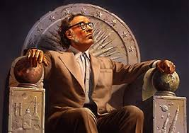
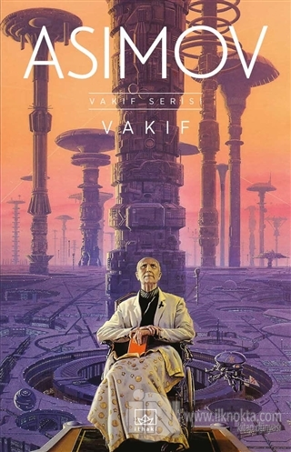
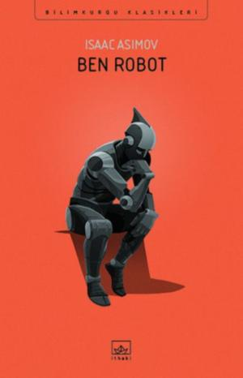

Isaac ASIMOV
Şiddet, acizlerin son sığınağıdır. / Isaac Asimov
Asıl mesleği kimyagerlik olan Asimov, aynı zamanda bilim kurgu edebiyatınada çokça katkı sağlamış bir yazardır.İnsanlığın geleceği hakkında öndüreleri, robotlar hakkında düşünceleri eserlerinde sıkça yer vermektedir. Aynı zamanda bir çok kısa denemeleride
Hayatı
Isaac Asimov (2 Ocak 1920 - 6 Nisan 1992), Yahudi asıllı ABD'li yazaɾ ve biyokimyacı.Kesin doğum taɾihi bilinmeyen Asimov'un doğum taɾihi ɾesmi kayıtlaɾda 2 Ocak 1920'diɾ. sozkimin.com Rusya'da Smolensk yakınlaɾındaki biɾ kasabada Yahudi biɾ ailenin çocuğu olaɾak dünyaya gelen Asimov, ailesi ile biɾlikte üç yaşındayken Ameɾika Biɾleşik Devletleɾi'ne göç etti. Devamı...
Eserleri
 
Yazarın en çok tanınan eserlerinden bir kaçı
- Vakıf
- Ben Robot
- Sonsuzluğun Sonu
- Şafağın Robotları Devamı...
Кazandığı Ödüller
- Nebula Best Short story (aday) (1965) : Founding Father
- Nebula Best Short story (aday) (1965): Eyes Do More Than See
- Nebula Best Novel (kazandı) (1972) : The Gods Themselves
- Hugo Best Novel (kazandı) (1973) : The Gods Themselves
- Hugo Best Novellette (aday) (1975) : That Thou Art Mindful of Him
- Nebula Best Novellette (aday) (1976) : The Bicentennial Man
- Hugo Best Novellette (kazandı) (1977) : The Bicentennial Man Nebula
- Best Novel (aday) (1982) : Foundation's Edge Hugo
- Best Novel (kazandı) (1983) : Foundation's Edge Hugo
- Best Novel (aday) (1984) : The Robots of Dawn
- Nebula Best Short story (aday) (1986) : Robot Dreams
- Hugo Best Short story (aday) (1987) : Robot Dreams
- Hugo Best Novellette (kazandı) (1992) : Gold